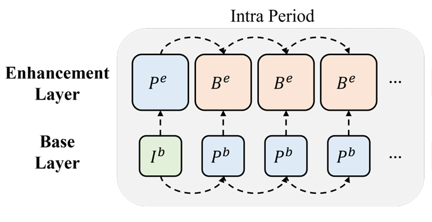

My name is Yifan Bian (卞逸凡 in simplified Chinese). I am currently a Ph.D. candidate at
USTC (University of Science and Technology of China),
department of EEIS (Electronic Engineering and
Information Science),
supervised by Dong Liu
and Li Li.
Previously, I got my bachelar's degree from Tongji University, Shanghai.
Now, I am working as a member of iVC (Intelligent Video
Coding) group. My research interests are in image/video coding, particularly
neural video coding and scalable video coding.
University of Science and Technology of China, Hefei, China
September 2022 - Now
Ms.c in Electronic Engineering and Information Science
Tongji University, Shanghai, China
September 2018 - July 2022
Undergraduate Student in Computer Science

One paper is accepted by TIP
We provide a new solution to spatially scalable video coding.
Experimental results shows that the coding performance of our proposed scheme surpasses SHM
(the reference software of SHVC) in a large margin. [DOI]
-
Bian Y, Sheng X, Li L, et al. LSSVC: A Learned
Spatially Scalable Video Coding Scheme[J]. IEEE Transactions
on Image Processing, vol. 33, pp. 3314-3327, 2024..
-
(Submitted to TCSVT) Li Z, Liao J, Tang C, Zhang H, Li Y, Bian Y, et al. USTC-TD: A Test Dataset and
Benchmark for Image and Video Coding in 2020s[J]. arXiv preprint arXiv:2409.08481, 2024.
-
2024.09, 1st Prizes, Award on MMSP 2024 Grand Challenge
Award (Imae/Video compression performance and speed tracks), Bian Y, Tang C, Li Y, et al.
-
2023.09, 2nd Prize, Award on VCIP 2023 Grand Challenge Award (Video compression
performance track), Bian Y, Tang C, Li Y, Li Z.
-
2022.09, 2nd Prize, Award on VCIP 2022 Grand Challenge Award (Image compression speed
track), Sheng X, Feng X, Liu B, Bian Y, Zuo Y.
AVS3-EEM
-
Tang C, Bian Y, Sheng X, et al. A validation set USTC-TD for stabilizing EEM training.
M8526, Weihai,
July 2024.
-
Algorithm description of AVS3-EEM v2.0.
-
Algorithm description of AVS3-EEM v1.0.
e-mail: togelbian@gmail.com
google scholar: https://scholar.google.com/citations?user=Cjy7koEAAAAJ